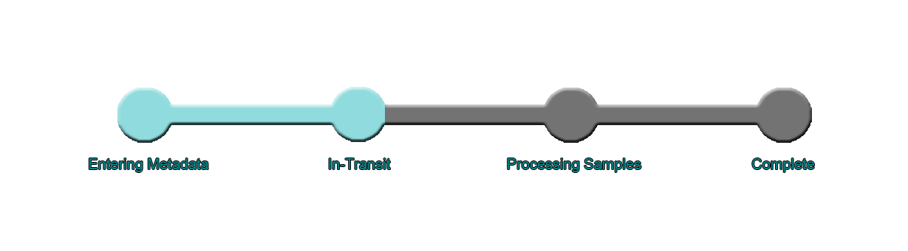
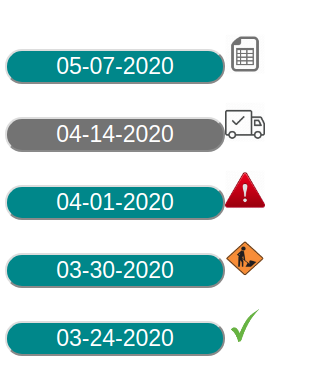
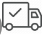

Collaborators can track the progress of their samples as they move through the TGen North process.
Users can see the tracking indicator on the summary page for the package they want to track. To navigate to a packages summary page, users can click on the package on the sidebar.
Packages on the sidebar also have an icon next to their buttons, indicating which step their package is currently on. Users can mouse over these icons to read a step description.
| Package Step Icon | Package Step ID | Package Step Name | Package Step Description |
|---|---|---|---|
|
1 | Filling Out Metadata | Package is still being worked on by the collaborator. Package metdata is being filled out and sample tubes are being labeled. |
|  | 2 | In Transit | Package metadata is complete, tubes are all labeled. Collaborator has submitted data to TGen North and is currently shipping the package to TGen North. |
| 3 | Processing Samples | TGen North has received the package, and is currently processing the samples. | |
| 4 | Complete | TGen North has finished processing all of the samples, results are ready! | |
| -1 | Error | Some or all of the samples encountered problems durring transit or processing. |